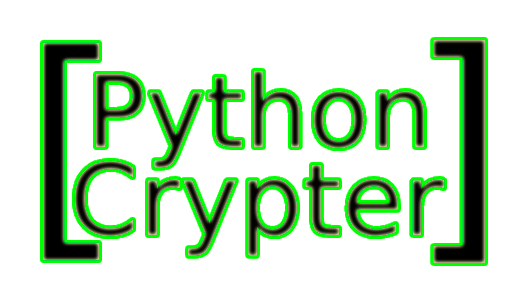

> I worked with a team to develop a Python-based
crypter used to obfuscate executable files,
allowing them to run on Windows 10 and 11
without interference. I found communication
with my peers was key, ensuring each part of
development was properly coordinated and done
to a proper standard.
> We used: Python, PyInstaller, AES Encryption,
Base64 Encoding, XOR Obfuscation,
Windows API Calls, and PE File Manipulation.
> How did it work?
- The crypter encrypted an executable file using
AES and XOR to obscure its contents.
- A Python stub was developed to decrypt and
inject the payload into memory using Windows
API calls.
- To evade detection, we implemented
process-hollowing and dynamically resolved
API functions.
- Base64 encoding and entropy padding helped
prevent signature-based detection.
> Team Collaboration & Communication:
- We divided tasks based on our individual
skills. Some worked on encryption methods,
while others handled execution techniques.
- We held regular talks to discuss the project
and make sure every module of it was working
smoothly.
- Code reviews and testing helped us refine
the program and make certain that there were
no major bugs.
- Clear documentation of each change we made
was very useful as it allowed us to go back
to fix any mistakes that were made and
fix them.
> Execution & Evasion:
- The stub focused on in-memory execution to
reduce antivirus detection.
- Each encrypted payload was unique, preventing
signature-based detection.
> Use Case & Ethical Considerations:
- This project was built as a proof of concept
to understand modern detection
evasion techniques.
- By creating and studying such programs,
security researchers can develop more effective
countermeasures, ensuring stronger defenses
against ever-evolving threats.
Type cd .. to return to the project list.
root
@
185.199.111.1
:/
crypter$